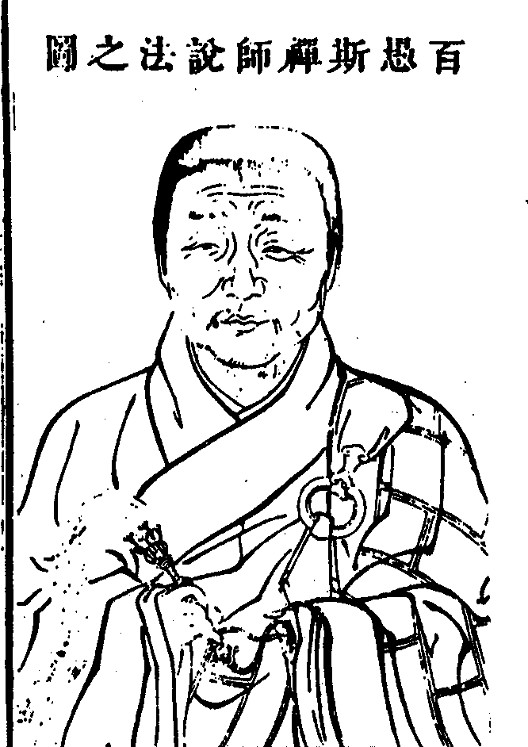

嘉興大藏經 第36冊
No.B359 百愚禪師語錄 (20卷)
【清 淨斯說 智操．智海等編語錄 智朴．方拱乾等編蔓堂集 附蔓堂集】
第 1 卷
百愚斯禪師說法之圖

師諱淨斯號百愚南陽桐柏谷氏子生萬曆庚戌廿一脫白明年圓具參瑞白雪老人聞鐘聲大悟記莂時年已四八矣後五載開法疁之昭慶壬寅主善權陞維揚之善慶乙巳中秋盡散衣缽越旬二日上堂辭眾翌晨書偈擲筆而逝頂煖徹日夜壽元七八臘終五七嗣法四十有二遺命塔造善權茶毘獲大小舍利不可勝數鎖子靈骨五色斕斑齒牙目睛全如故辛亥建塔寺東北萬松嶺後坤艮向銘為方學士拱乾所撰乙卯築禮菴守護塔左八坐名藍九會說法語錄廿卷梓送楞嚴隨藏流通。
門人智操拜記
百愚斯禪師語錄序
一千七百則之先有公案否前此矣前此則何以一千七百則獨傳發端焉耳發端則有廣之者矣諸家語錄是也語錄者語言文字之屬也前此舉語言文字而掃之矣以為佛法之障也繼此可得而掃之否曰存之則語言文字為佛法之障掃之則佛法又為語言文字之障矣然而掃與存果何居則貴乎其人焉爾其人存則其政舉語言文字皆神奇也其人亡則其政熄語言文字皆臭腐也以臭腐之語而出於佛祖之口則佛祖之矣以神奇之句而出於野狐之口則野狐之矣吾故曰貴乎其人也然而其人則難言之矣求其人於佛法之季則益難之矣吾則以仰百愚大師足以當之大師開悟最早操履至醇譬之帷燈匣劍其光鍔以韜斂為奇及其苦心為人而寶珠肆應全體大用有不可得而掩者其嗣存焉睿公以語錄見示余曰吾將求大師之人則大師之語言文字舉此矣夫大師之人諸方所共仰或以為泰山喬岳或以為威鳳祥麟或以為光風霽月或以為烈日秋霜而要其感人以誠遇物以恕律己以孤峻處事以平等不離真實者近是經云惟此一真實餘二則非真以大師之實求大師之人以云傳也以大師之人存大師之語言文字以云救也。
山陰雲隱弟子祁熊佳頓首拜題
百愚斯禪師語錄序
禪師俗姓谷氏河南南陽桐柏縣人自出世後以向上鉗錘學者凡八主道場始暢於昭慶圓寂於善慶建塔於善權善權者吾邑溪山最勝處歷代祖師僊靈窟宅也先是邑中蔣晦齋先生以宰官為釋氏護法念茲山自洊更兵燹來榛莽之所叢生獾豕之所嗥嘯法席非得人不可於是不徇名不懾勢特迎師主是山師至則攘幽剔薉復故拓新寺大治繼師者即師法嗣寒松公公神明警秀威音肅然其語錄詩文亦久為世重師沒後寒公手輯其語錄為二十餘卷藏寺中寒公嘗為余言師為人清沖簡劭是支道林竺法深一流人及讀龍眠先生所為師塔銘條分縷柝寒公之言益信既又讀師語錄龍駒蹙蹋天馬脫羈時而說法熾然時而拈花微笑竊歎自一花五葉以還青原南嶽而下提唱兼行然未有颯爽森張單提直入如禪師之踸踸者也則吾於寒公之言益大信噫吾見今之執拂而踞上座者矣其上者剽竊古德傳燈單文隻字支離撏撦嚼蠟捕風輒揚揚然詡於人曰我某宗嫡傳也是與王謝家不慧子弟專以門閱上人者何異甚或牽綴權勢憑藉貴游攫人之田廬而魚肉之猶曰我為祖塔司糞除也五宗嚴支派也識與不識無不從而嘔噦之聞禪師之風亦庶幾自媿矣余涉秋行國山道中憩善權寺門松巷屈指疇昔則禪師既寂晦齋繼歾即寒公亦席不暇暖他徙問其寺則已為豪有力者主之矣驚飆所及林無靜柯俛仰之閒能無慨然於中乎因至師塔下汲澗水一盂而飲之風霜刻轢泉香而石瘦則猶能想見師之為人。
荊溪法弟子陳維崧頓首謹拜撰
百愚斯禪師語錄目次
百愚斯禪師語錄卷第一
住蘇州嘉定昭慶寺語錄
順治丙戌冬在雲間青龍隆福寺受請入院。
三門者箇大解脫門今為諸人八字打開了也且作麼生入喝一喝獅子窟中無異獸象王行處絕狐蹤彌勒殿盡道當來下生緣何卻在者裏便好奪卻布袋趁出山門顧左右云今且放過一著遂禮三拜。
方丈玄關把斷搜空罔象之珠寶鏡高懸照破野狐之膽直饒釋迦維摩到來也要按過何故卓拄杖云假雞聲韻難瞞我未肯糢糊放過關。
法座此是寶華王座未審須彌登王在甚麼處且看斯上座指模畫樣去也陞座拈香此一瓣香明如舜日曠若堯天祝延
聖躬萬歲萬歲萬萬歲伏願金輪永鎮玉燭常調壽踰百億須彌化洽大千沙界此一瓣香經天緯地貫古通今奉為滿朝文武闔國公卿府縣尊官遠近檀護惟冀永作生民怙恃恒為佛法金湯此一瓣香非正非偏非玄非要穿卻諸佛鼻孔換卻衲僧眼睛供養前住越州雲門顯聖堂上傳曹洞正宗二十八世瑞白雪大和尚用酬法乳之恩就座維那白椎云法筵龍象眾當觀第一義師云若論者箇第一義黃面瞿曇插觜無分碧眼胡僧退身有地縱饒德山有棒只堪打豬打狗臨濟有口只好喝驢喝馬雖然威音那畔休話如何曲為今時繇人施設舉拂子云者裏會去不妨竿木隨身逢場作戲饑餐無米飯渴飲不溼羹打鞦韆於猛虎頷下翻筋斗於毒蛇口中磅礡虛空紛紜宇宙橫抽寶劍截諸見之稠林玅協弘通翦異端之穿鑿世諦道諦隨處周圓佛恩皇恩一時酬足正眼看來未是衲僧行履處且作麼生是衲僧行履處隱身不必須嵒谷闤闠堆堆睹者稀維那結椎云諦觀法王法法王法如是下座。
元旦上堂柳眼垂青窺破江心紅日冷梅腮發笑驚回塔畔曉風高冰河發燄以騰輝枯木生花而散彩遷喬黃鳥弄格外之真機出谷白雲呈現前之玅用煙光溢目淑氣盈空可謂應時納佑慶無不宜正恁麼時父子團圞君臣會合又且如何良久云干戈偃處狼煙息萬里歌謠賀太平。
至南翔白鶴寺請上堂世尊拈花老不識羞迦葉微笑承虛接響致使後代兒孫向曲彔床上指東話西正法眼藏未曾有一人動著山僧路見不平傍為鏟削卓拄杖云正法眼藏被昭慶百雜碎了也一時化作無量無邊清淨摩尼寶珠凡在會者不論僧俗男女貧富貴賤賢愚老幼一齊布施直下咸知此珠在凡不減在聖不增人人具足箇箇圓成濟人施物應用無虧敢問諸人即今珠在甚麼處喝一喝云罔象到時光燦爛離婁行處浪滔天問接物利生即不問如何是第一句師云當空杲日人皆見如何是第二句師云白雲片片過前川如何是第三句師云鴛鴦飛過洞庭湖進云日麗風和鶯語細天空雲淡水聲清師云休來者裏念篇章。
上堂昨夜三更澍大雨今朝覿面為相舉依依柳色吐黃金片片梅花流玉乳大地群萌盡獲恩森羅萬象皆歡舞莫沉吟急薦取若能於此絕狐疑直下翻身超佛祖。
上堂喝一喝云大眾還識者金剛寶劍麼擬則傷鋒犯手觸則喪身失命三世諸佛不敢正眼覷著歷代祖師那容佇足傍觀若是箇漢信手拈來纖毫不犯直下劃開情塵見網當陽擊碎金鎖玄關予奪縱橫殺活自在隨處作主遇緣即宗正好挽祖風於末運捧佛日於天心世出世間一大丈夫然猶是建化門中事且不落功勳一句作麼生道手指空時天地轉回途石馬出紗籠。
結制上堂十五日已前卒風暴雨十五日已後朗月晴空所以道把住則黃金失色放行則瓦礫生光放行把住即不問汝諸人正當十五日又且如何話會○於此洞徹不妨做箇灑灑落落衲僧去否則且向三條椽下七尺單前高挂缽囊壁立萬仞內脫身心外遺世界一念萬年萬年一念不以程途為限直須以悟為期誠能如是上不負於諸聖下不辜於己靈然後於祖師門下扶豎宗乘接待往來未為分外雖然若到昭慶門前打拆腳脛何故不見道清光照眼似迷家明白轉身還墮位。
說戒上堂祖印高懸凡聖絕跡樓閣門開別峰相見若是恁麼事須是者般人昔法眼問永明潛云古人道隔壁聞釵釧聲即名破戒現睹金銀合雜朱紫駢闐且道是破戒不是破戒潛云好箇入處眼云子向後有五百毳徒為王侯所重在乃云即今香花羅列鐘鼓交參海眾雲臻人天普集眾中有得箇入處者不妨攢眉便去掩耳即行花街柳巷任意逍遙歌管樓臺隨緣放曠擲大千於界外納劫火於腹中若到者箇田地名真持戒苟或遲疑應須諦聽。
弁山先老和尚忌日上堂維那未白椎已前先師向諸人眉毛尖上轉大根本法輪說甚深修多羅使未信者信未解者解未安者安未悟者悟未得涅槃者得涅槃一音演唱隨類各解所謂一切智智清淨無二無二分無別無斷故然後又向諸人眉毛尖上復入寂光三昧大眾見麼縱饒見得更有末後句子未曾道在昭慶今日要與諸人道破去也良久云寧可截舌不犯國諱。
上堂雲門餅趙州茶打發閒神野鬼秘魔叉石鞏箭驚駭泥豬癩狗五位三玄是甚破艸鞋六義圓相是甚繫驢橛正眼看來總是一場笑具昭慶曾無一法與人無禪道可參無佛法可學亦不教你明心見性亦不教你超佛越祖只要饑來喫飯困來打眠熱時乘涼寒時向火者裏會得人人鼻孔撩天設或未然箇箇腳跟點地。
誕日上堂舉韓文公參大顛因緣乃云大顛老漢雖有撥亂之謀且無定安之策有問昭慶春秋多少但道庚戌生的待他曰不會更道今年三十八當時大顛若下得者兩語不惟免得首座受屈亦不教者俗漢看破山僧如此舉揚與古人是同是別良久云青山只解磨今古流水何曾洗是非。
解制上堂雨霽雲收處處青山呈舊面涼生暑退紛紛黃葉墜新機秋水澂玻璃之色銀蟾吐寶鏡之輝物物全彰頭頭獨露會得前是結制不會今又解制其結也魚躍鳶飛星馳電卷疾燄過風奔流度刃臨濟德山到來只得吞聲飲氣其解也龍吟霧起虎嘯風生凡聖交參人天普會情與無情同圓種智雖然有結有解猶是今世門頭事只如無解無結又作麼生疁城壘壘超今古練水滔滔絕去來問百二十期今已解臨筵朢日事如何師云海闊從魚躍進云一輪撲落須彌倒透出虛空甚麼人師云天空任鳥飛進云圓缺缺圓空界月再三吞吐始應知師云只恐不是玉進云得力須忘飽休糧更不饑師云是玉也大奇。
至青浦縣眾縉紳請上堂秋風拂拂送輕舟昨泛青溪浪裏遊撒箇漫天無縫網魚龍蝦蟹一齊收顧左右云還有翀霄彩鳳透網金鱗麼有則今日功不浪施無則不免撥轉船頭別行一路去也拈拄杖云只如教中道若能轉物即同如來者箇拄杖是物作麼生轉得同如來去者箇是如來作麼生轉得同物去如能轉得不妨於拄杖頭上現百億須彌百億日月百億四天下百億釋迦若轉不得卓拄杖云城市不堪留錫久恐驚鶯囀畫樓前問世尊分衛化導眾生和尚入城化箇甚麼師云蘆花兩岸雪進云還有承當得的麼師云江水一天秋進云當空紅日照崑崙師云莫向言中覓須從句外求一僧纔禮拜師云好生問話僧一喝師便打僧又喝師亦打僧豎起拳云長安大道向者裏去也師云教休不肯休進云悄然黃葉落不獨一天秋師又打云直待雨淋頭。
至上海縣龍華寺請上堂黃浦波浪浴日滔天窣堵簷牙拏雲攫霧轉輪殿覿面全提藏經樓橫空獨露會得者一任轉天關捩地軸施一機地震山搖行一令神驚鬼懼非惟報佛恩德亦不辜負方丈主人打鳳羅龍一片婆心忽有人曰和尚者般說話亦是擔水河頭賣昭慶向他道不因漁父引怎得見波濤問十五已前缺了圓十五已後圓了缺正當十五是圓是缺師云一任鑽龜打瓦進云萬吉碧潭空撈摝未曾驚覺莫能知師云且喜沒交涉問正偏回互即不問賓主交參事若何師云昨日雨今日風進云如是則寒山逢拾得鼓掌笑欣欣師云也不辜負闍黎。
至周浦鎮永定寺請上堂永定寺中考鐘伐鼓周浦市上賣狗懸羊歌管樓臺總是衲僧境界花街柳巷無非慈氏家風盤山睹割肉而明心樓子聞唱歌而悟道普化搖鈴鐸全提向上機關善慧販魚羹直指當陽玅用所以人能弘道非道弘人到者裏誰分城市山林那管魔宮佛國任運逍遙隨緣放曠舒卷不落功勳去來了無變易雖然如是須知更有轉身一路始得還知轉身一路麼良久云知音不用頻頻舉達者須知暗裏驚問大行普賢超格外凝然苦行事如何師云古井含新月進云樹凋葉落金風露衲破衣穿作麼生師云殘枝帶晚霞進云髼頭林下為閑客跣足人閒作野僧師云再道一句看進云石人頭上插金花師云相隨來也。
結制上堂拈拄杖云把住六門關撥開大火聚聖凡無處逃佛祖豈能避直得大地平沉千差路絕海水逆流須彌倒卓鶻眼龍睛不敢覷著銅頭鐵額那容近前正恁麼時便乃點鐵成金轉凡為聖變娑婆為極樂翻荊棘為栴檀驢乳牛乳盡為無上醍醐有情無情共證不二真覺箇箇如獅子兒哮吼一聲驚天動地縱饒到此正好喫棒復卓一卓云權威黑帝令尤切那許東風弄柳狂問一雨均施三根普潤如何是類墮師云何處不稱尊如何是隨墮師云步步不沾塵如何是尊貴墮師云覿面無相識進云恁麼則迥迥雪山千古秀滔滔洞水萬年流師云三墮外更道一句看僧禮拜師便打。
冬至上堂天得一以清地得一以寧神得一以靈君王得一以治天下拈拄杖云只如木上座能殺能活能縱能奪或時現大充滿法界或時現小在一微塵縱橫自在變化無拘且道他得箇甚麼卻能如是千尋海底泥牛舞萬仞峰頭玉鳳鳴問琉璃界外不知蹤娑婆國內無名姓且道此人具甚麼手眼師云步步冰花結進云還許他參學也無師云言言徹骨寒進云仲冬嚴寒伏惟和尚珍重師云放你三十棒。
上堂第一義為君決面赤不如語直巧言不如實說秤錘軟似綿團燈心硬似鐵橛石女歌木童拍萬象森羅笑不歇彌勒惺惺總不知釋迦依然猶未瞥洞山五位那能該臨濟三玄收不得若信得及師恩親恩一時酬畢如信不及雨過曉風清月明秋水白。
上堂凜凜朔風遍界寒千林葉落水成斑透肌徹骨誰能委惟有梅花笑破顏明舉似莫瞞盰剔起眉毛仔細看豎拂子云大眾見麼凍雞啼處家園曉隱隱行人過雪山。
佛成道日上堂世尊臘八於正覺山前夜睹明星悟道喟然歎曰奇哉一切眾生具有如來智慧德相但以妄想執著而不證得喝一喝云是何言歟大小世尊眼空四海傍若無人者等說話只好欺壓流俗誑惑愚人二千年後難免簡點只如離兜率降王宮豈不是妄想執著耶入胎降生大驚小怪指天指地豈不是妄想執著耶棄金輪之位舍萬乘之國豈不是妄想執著耶詣雪山餐麻麥睹星悟道豈不是妄想執著耶乃至說頓說漸說偏說圓說空說有靈山會上拈一枝花謂之教外別傳豈不是妄想執著耶正眼看來何異好肉穵瘡總不如昭慶肚饑喫飯身冷加衣任運騰騰灑灑落落亦無明星可睹亦無禪道可悟復何妄想執著之有哉山僧如是告報大眾直下無疑不妨與釋迦老子同證同悟同時成道更或擬議滄江波動因風起瓦灶無薪火不然。
祈嗣請上堂乾坤之內宇宙之間中有一寶秘在形山卓拄杖云形山粉碎了也若能見得世出世間靡有過於此者輪王得之以御天下龍女獻之而獲授記以此懺罪無罪不滅以此祈福無福不臻隨心所欲無不具足天人群生類皆承此恩力更有承紹家業又如何道庭前玉樹花開早世世芬芳亙古今。
薦嚴慈請上堂豎拂云只者箇圓陀陀光爍爍淨裸裸赤灑灑虛空包不住大地載不起無去無來冥通三際亙古亙今體遍十方二聽莫聞其響五目安睹其容不可得而親不可得而疏舉心即錯動念即乖還有承當領略者麼若能如是處生死流若驪珠獨耀於滄海踞涅槃岸似桂輪孤朗於碧天三代祖禰以此而超生累世親緣仗此而度脫可懺不懺之咎以報不報之恩苟非其人未免重說偈言遂合掌云惟願無限勝良因回向法界真實際一念無私證無生直入如來不退地八德池中任遨遊九蓮臺上恣嬉戲如此了知三世法於諸如來無有異無去無來亙古今不生不滅無淪墜一塵普現一切剎一切剎在一塵內種種方便度眾生盡未來際作佛事過去菩薩如是學現在菩薩得授記未來菩薩亦復然共證如來平等智回向法界諸有情是則名為不思議問如何是正中偏師云臘月藕花鮮如何是偏中正師云殘雲籠古徑如何是正中來師云泥猿嘯月臺如何是兼中至師云鍼來與線去如何是兼中到師云虛空開口笑僧禮拜師便打。
上堂仰之彌高鑽之彌堅瞻之在前忽焉在後昭慶如是舉揚大眾作麼商量謂是佛法卻是顏子道底謂是儒書又在山僧口裏說出於此分析明白不妨奇特有者便謂儒教不殊於禪教世法無異於佛法天地一指萬物一馬凡聖一體三界一心彼此一致恁麼解會料掉沒交涉若是大丈夫直下截斷葛藤掀翻情識孤迥迥露堂堂高超三界獨步大方無可不可無在不在不動等覺而建立諸法還有恁麼人麼山僧不妨下箇註腳仰之彌高不隔纖毫大鵬展翅廓爾沖霄鑽之彌堅亙古如然白雲片片皓月娟娟瞻之在前迥脫言詮揚眉瞬目如隔天淵忽焉在後忒煞漏逗臘月梅花馨香依舊。
元旦上堂翡翠簾前九夏霜花滿地琉璃殿上三更旭日盈門木雞啼而千林曉玉犬吠而萬戶春藏香象於不萌草裏盛活蛇於無底籃中燕尾船兒日越清風羊頭車子夜推明月不容那畔寧落今時所以道靈苗瑞草野父愁耘露地白牛道人懶牧太平豈有象何妨麟集鳳翔造化本無私一任龍吟虎嘯正恁麼時且道承誰恩力野老不知黃屋貴六街慵聽靜鞭聲。
至弁山蕃光和尚請上堂雲封弁嶽人天景仰無門月照華林龍象參尋有路花石澗恒演長舌之音彌勒峰獨現大人之相塵塵祖意盈眸剎剎真風覿面豎拂子云大眾者裏會得一任胸藏武庫肘佩靈符渾融正偏迭為賓主驗龍蛇於杖頭分玉石於言下掀翻日月別立乾坤十地聞之魂驚三賢見之膽戰不是神通玅用亦非法爾如然雖則如是若在衲僧分中未為奇特須知我洞山門下別有尊貴一路始得作麼生是尊貴一路良久云不須此外尋堂奧諸向華林問主人問昨日設供報師恩今朝說法利群生說法利生則且置報恩一句請師宣師云青龍岡上雲靄靄進云和尚設供先老人還來受供也無師云象王峰畔霧騰騰進云與麼則和尚未離昭慶先老人早已受供了也師云切忌妄通消息。
上堂舉實性大師因芙蓉訓禪師至上堂以右手拈拄杖倚左邊良久曰此事若非芙蓉師兄也大難委悉便下座乃云實大師雖則人情佛法一時周備檢點將來大似向福建人前賣荔枝未免傍觀者哂。
至玉峰請上堂玉峰突兀獨露萬象之中寶塔玲瓏勢出層霄之外彌勒閣無殊兜率曇華亭迥異人間梵宇參差影沉碧水松杉錯落韻奏笙簧處處車馬駢闐時時朱紫合雜雲封雉堞偏正何分月照閭閻主賓莫辨於斯會得無邊剎海自他不隔於毫端於斯不會十世古今始終不離於當念舉拂子云分明月在梅花上看到梅花早已遲。
至雲間貝多菴請上堂只者第一義以太虛為紙大地為硯九峰為毫三泖為墨直教宋石門趙文度董玄宰陳眉公竭其心力殫其精巧寫到彌勒下生以至盡未來際不能加一毫於其間須知語言文字之所未及世智辨聰之所未窮故曰口欲譚而辭喪心欲緣而慮亡貴在言前領荷格外翻身四五百條花柳巷正好調心二三千處管絃樓一任放浪乃吾人之固有非性分之強為不然明朝五月端陽節看取龍舟奪錦標。
誕日上堂年年此日此日年年見有流動物無變遷天外白雲兮乍來乍去江心明月兮或缺或圓松自直棘自曲鵠自白烏自黑彌勒釋迦誰後誰先豎拂子云只者箇三世諸佛不敢譚著歷代祖師不敢覷著迎之不見其首隨之不見其後大眾會麼一種風流人不識新婦騎驢阿家牽。
上堂今朝六月十九普門大士垂手盡謂降伏群魔也是拏棒喚狗昭慶卻不然拈拄杖云不見道見怪不怪其怪自壞。
上堂床頭蟋蟀舉古驗今檻外芭蕉敲風弄月所以道真機無隱大道全該不待睹影逢渠玅見無情說法雖然還有究竟者麼秋色滿園人不薦哀哀孤鴈又南飛。
上堂疁城磊落磨今古練水瀠洄絕往還薦得目前無別法迥然直透祖師關。
至化城菴請上堂化城雖設策進駑駘寶所非遙翻騰龍象到者裏言方便而了無方便立程途而迥絕程途直欲人人同登毘盧樓閣其人如來覺場果是知有的人時時奉重畢竟如何是奉重的事夜半庭前紅日冷不萌花下舞春風。
至婁塘西資菴請上堂法無定相道絕方隅赴感隨機由人施設大眾還委悉麼落木蕭蕭練水寒扁舟隨處且垂竿楊柳岸蓼花灘得盤桓處且盤桓等閒唱箇漁家樂鉤盡滄浪月一灣。
薦亡請上堂欲識無生旨分明在目前芙蓉含露笑楓葉醉霜眠剎剎光明藏頭頭極樂天不須向外覓喝一喝云擬議隔三千。
至獅子林請上堂鬱密獅林深可藏橫溪一室儼如航梳風細柳千條碧灑雪殘梅幾片香東閣觀潮知水信西林坐月覺天涼即心即佛誰相委▆▆波中蕩夕陽。
上堂舉歸宗因僧問如何是佛宗曰欲向汝道恐汝不信僧曰和尚重言焉敢不信宗曰即汝便是僧曰如何保任宗曰一翳在目空花亂墜乃云赤眼歸宗雖則機辨縱橫卷舒自在仔細較量猶涉唇吻當時若問昭慶如何是佛即向他道你是抱贓叫屈漢再問如何保任和聲便打非唯使者僧別有機關亦不教他閨閣中作活計大眾畢竟歸宗道的是昭慶道的是儻若躊躇君向瀟湘我向秦。
薦亡請上堂滿林秋色正芬芳帶醉芙蓉笑夕陽識得嚴親真面目分明格外好風光好風光端的別彌陀不在安養國既不在安養國即今在甚麼處畫○云長空雲散家家月。
上堂佛法本來無可說何須特地更饒舌今朝恰遇小陽春也要山僧應時節擊拂云大眾者是甚麼時節香嚴擊竹也不離者時節靈雲見桃花也不離者時節洞山睹影也不離者時節玄沙[祝/土]指也不離者時節乃至見色明心聞聲悟道觸著磕著一念相應心華發現總不離者時節只如不落因緣時節又作麼生擊拂云不離當處常湛然覓即知君不可見。
至蘆菴請上堂法離見聞覺知若求見聞覺知是見聞覺知非求法也直饒過去古佛猶不免抱橋柱洗腳山僧則不然豎拂云大眾看看只者箇不落見聞覺知迥超情識意想三世諸佛歷代祖師以及一切眾生莫不承此恩光作諸佛事大眾還見麼見與不見拈過一邊只如昨夜陝府鐵牛與嘉州大象廝撲嚇得無邊身菩薩走向三千里外躲入藕絲孔中且道是箇甚麼意旨良久云識法者懼。
至廣福鎮請上堂紛紛細雨偏麗乳酪於長空冽冽霜風密布寒夙於大地水流雲與共演不二之法門猿啼鶴唳競談一乘之玅旨到者裏人人是佛箇箇是祖本來現成阿誰無分又那管城市山林鄉村野店正好拖泥帶水隨處為人雖然當知我衲僧家有超佛越祖一大奇特事在如何是奇特事顧左右云因甚鍼眼魚吞卻占波國。
至江灣保寧寺請上堂古殿崔嵬昔日之真風不墜層樓突兀今時之氣象彌新路接雲衢而車馬絡繹門連江浦而歌棹頻聞左之右之無殊玅莊嚴海舉足下足何異菩提覺場到者裏正好全身擔荷竭力提持轉自己歸山河大地將山河大地轉歸自己自己與山河大地無別無二大眾還委悉麼知音不必輕彈指千里同風始是奇復舉昔世尊一日因食時命阿難入城持缽復云當依七佛儀式阿難云如何是七佛儀式世尊遂喚阿難阿難即應諾世尊云持缽去乃云大小瞿曇也是無風起浪慶喜尊者無端被人點破面門正眼看來二俱狼籍山僧與他據款結案揮拂子云輕舠箬笠曉風寒深淺何妨便下竿一曲滄浪人不薦且隨白鷺過江灣。
至南翔彌陀殿請上堂當陽一句迥絕遮攔格外真機了無背向到者裏通身是口談之不及渾身是眼見之不到所以釋迦掩室於摩竭淨名杜口於毘耶須菩提無說而顯道釋梵王絕聽而散花若是箇超群拔萃漢不妨掩耳即行有甚麼事有麼有麼若無更向葛藤裏薦取舉昔王荊公謂同僚曰我得雪峰和尚一句子直至而今為宰相同僚請益公豎起拳云者箇是甚麼同僚罔測乃云荊公之器小哉若論者一句子輝天鑑地括古囊今諸佛得之而成正覺菩薩得之而行六度聲聞得之而證四諦君得之而為堯舜禹湯臣得之而為皋陶伊尹父得之而慈子得之而孝朋友得之而信世出世間之事無有不從者一句而得豈止為宰相而已大眾且道畢竟是那一句子顧左右云寧可截舌不犯國諱。
至清風菴上堂卓拄杖云只者箇有眼不可睹睹之如盲有耳不可聞聞之如聾乃至不可嗅不可談不可觸不可思從本已來離言說相離名字相離心緣相離非有相非無相非非無相非非有相非有無俱相非一相非異相非一異俱相可謂言語道斷心行處滅雖然只如泥牛銜月木馬嘶風露柱罵燈籠山門騎佛殿且道是甚麼人境界復卓拄杖云孤舟棹出婁江月下載清風付與誰。
至茜涇福林庵上堂薰風至而殿閣涼生柳陰濃而池塘綠暗茜水舒諸佛之長舌福林彰衲僧之巴鼻明明獨露卓卓全該迥絕言詮安容穿鑿直得生佛一體愚智一如無高無下無古無今正好於祖師門下各出隻手扶豎正教共挽頹風光我法幢且道誰是其人若真獅子兒哮吼也驚群。
重九上堂蕭蕭落木逐風飛鴻鴈銜蘆塞外歸借問而今何節屆東籬黃菊逗新機大眾若道今是重陽不免隨境逐物若道不是重陽亦是違時失候直須坐斷兩途出人一頭地始得不隨時變不逐境遷處富貴而不為樂居患難而不為憂坐臥聲色差排古今於一切法而得自在然後可以為明為導為綱為領於此門中共出隻手建大法幢互興佛事豈不謂世出世間第一勝事於中還有其人麼大風吹落石人帽拾得寒山笑不休。
百愚斯禪師語錄卷第一